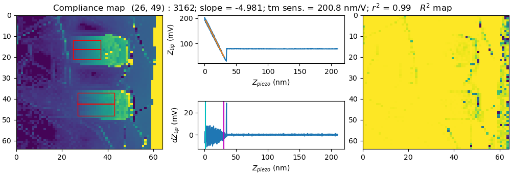

example module#
Example#
Example usage of pyMFD.
pyMFD is a python software package that facilitates the analysis of force-volume atomic force microscope scans. This software can be used to create a compliance map of a microcantilever and then analyze the compliance along the cantilever to extract Young’s modulus.
See installation instructions for requirements.
Example#
from pyMFD.FV import FV
from pyMFD.summarize import comp_mat_inspector
from pyMFD.cantilever import calc_modulus
import matplotlib.pyplot as plt
import os
use_inspector = False
path = os.path.abspath(os.path.dirname(__file__))
spm_file = os.path.join(path, "data/examples/02041411.001") # Example force-volume scan
fv = FV(spm_file) # Load force-volume scan
print(fv.tm_defl.shape)
(comp_mat, r2s) = fv.summarize()
print(comp_mat.shape)
# Interactive compliance map inspector
# Use mouse to select pixels in the (left) compliance map.
# The raw force-deflection data is shown in the center plot.
# The R^2 map (how well the force-deflection data was fit) is shown in the right map.
if use_inspector:
comp_mat_inspector(comp_mat, fv.z_piezo, fv.get_retract(), fv.sc_params, r2s_mat = r2s)
plt.show()
###########################
# Find cantilever modulus #
###########################
cant_num = 0 # Cantilever number
rows_to_avg = 3 # Number of rows to average around center line of cantilever
(E, offset, E_lin, offset_lin) = calc_modulus(fv, cant_num)
print("---- Cubic fit ----")
print(f"Young's modulus: {E/1e9:.2f} GPa")
print(f"Offset: {offset*1e6:.2f} µm")
print("---- Linearized fit ----")
print(f"Young's modulus: {E_lin/1e9:.2f} GPa")
print(f"Offset: {offset_lin*1e6:.2f} µm")
Example output:
(1024, 2, 4096)
Sample = 02041411.001
TM Defl. Sens. = 107.03 nm/V
(64, 64)
Sample = 02041411.001
TM Defl. Sens. = 107.03 nm/V
---- Cubic fit ----
Young's modulus: 145.97 GPa
Offset: 4.14 µm
---- Linearized fit ----
Young's modulus: 158.66 GPa
Offset: 4.04 µm
Compliance map inspector
